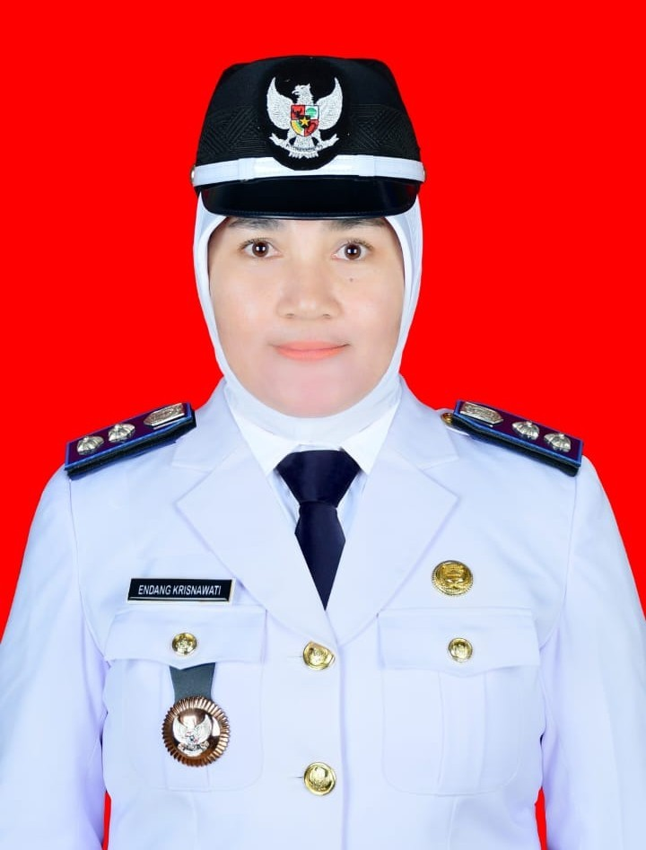
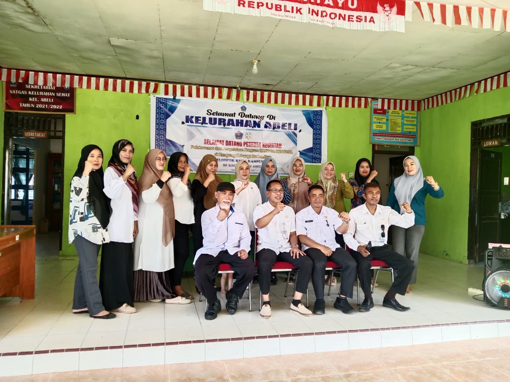
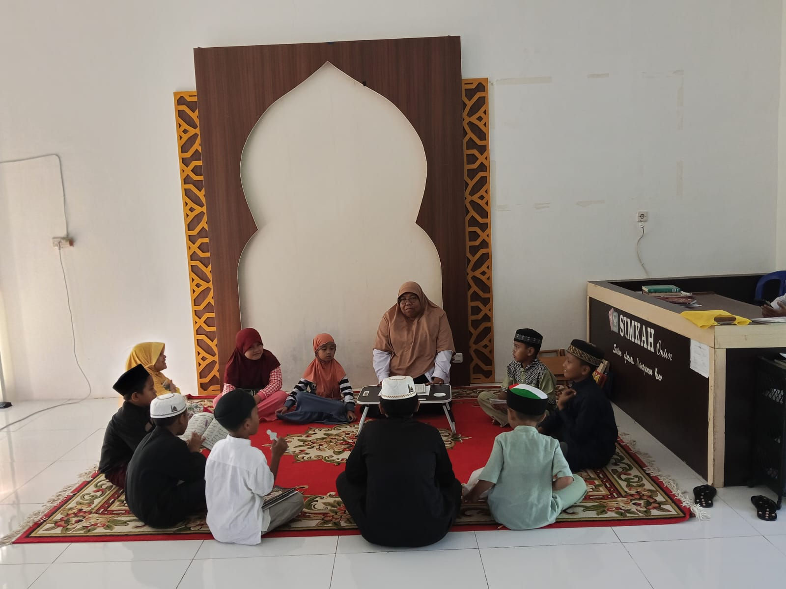
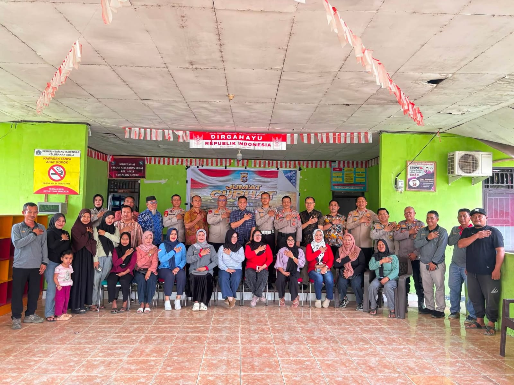

Dokumentasi
Pusat portal pelayanan publik dan informasi lengkap untuk masyarakat Kelurahan Abeli.
Sejarah, visi misi, struktur organisasi, data demografi wilayah, dan informasi penting Kelurahan Abeli.
Lihat Profil Lengkap →Dapatkan informasi terbaru mengenai kegiatan, agenda kelurahan, laporan harian KKN, dan pengumuman resmi.
Baca Berita Terbaru →Mengenal berbagai organisasi kemasyarakatan aktif seperti PKK, Karang Taruna, dan LPM Kelurahan Abeli.
Mengenal Kelembagaan →Informasi tentang potensi wisata pesisir, kebudayaan lokal, UMKM perikanan, dan sumber daya alam Abeli.
Jelajahi Potensi →Verifikasi informasi publik dan cek kebenaran berita untuk terhindar dari hoaks dan informasi menyesatkan.
Periksa Kebenaran Berita →Temukan informasi kontak kantor, jam pelayanan administrasi, pengurusan surat, dan peta lokasi resmi.
Akses Layanan Surat →Kumpulan informasi terkini, laporan harian kegiatan KKN, dan artikel edukasi literasi digital untuk seluruh warga Kelurahan Abeli.
Simak liputan video sosialisasi literasi digital, edukasi anti-hoaks, dan kegiatan pengabdian masyarakat KKN Tematik Kelurahan Abeli.
Edukasi bagi warga Kelurahan Abeli untuk mengenali, memverifikasi, dan menghentikan penyebaran berita bohong demi keharmonisan lingkungan.
Klik portal resmi di bawah ini jika Anda menerima berita meragukan:

NIP. 198405222009012003
"Selamat datang di portal informasi digital Kelurahan Abeli. Kami berkomitmen untuk terus meningkatkan pelayanan publik yang transparan, profesional, dan inklusif. Melalui sinergi bersama Ketua RW, RT, serta program pengabdian KKN Tematik mahasiswa, kita bersama-sama mewujudkan Kelurahan Abeli yang mandiri, maju, dan harmonis."
"Terwujudnya Kelurahan Abeli sebagai kawasan hunian dan pusat ekonomi pesisir yang tertib, aman, sejahtera, serta berbasis gotong royong."
Meningkatkan kinerja aparatur kelurahan dalam memberikan pelayanan publik yang cepat, tepat, transparan, prima, dan bebas dari pungutan liar.
Mendorong partisipasi aktif lembaga RT/RW dan elemen masyarakat dalam perencanaan pembangunan fisik serta pemberdayaan ekonomi lokal.
Sentra nelayan pesisir & produksi hasil laut.
Olahan makanan hasil laut & kerajinan.
Terletak di Kecamatan Abeli, Kota Kendari, Sulawesi Tenggara dengan wilayah pesisir strategis.

Aktif menggerakkan posyandu, posbindu, pembinaan UMKM ibu-ibu, dan ketahanan pangan rumah tangga.

Wadah generasi muda Kelurahan Abeli yang fokus pada kepemudaan, olahraga, kesenian, dan aksi sosial.

Mitra strategis kelurahan dalam merencanakan pembangunan fisik dan menyalurkan aspirasi Musrenbang.
Website ini didevelop oleh tim IT KKN Tematik Kelurahan Abeli 2026.

Full-Stack Developer

UI/UX Designer

Front-End Developer